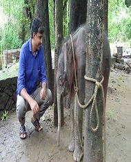

Gallery


Dr.Syed Aboobacker Sidhique is a Veterinary Surgeon.He is a Government practition since 2000 .He is married and have 3 daughters.His Wife is Malayalam Teacher.
He is a well Experienced veterinarian in kerala.As well as good dedication in his work.He had made several surgeries in which some are very rare among veterinary doctors in kerala.
Now he is working in Veterinary Dispensary Elamkulam in Malappuram district with an additional duty in Veterinary Dispensary Thazhekode Malappuram District.
Different Veterinary House Sergents came and practised under Him . And those internies have made their research best.